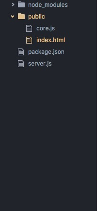

Rails VS MEAN Stack
Created by Josh Applebaum & Prakash Waghwani
Our presentation will focus on the following items:
Ruby on Rails:
Ruby on Rails is a web application framework that utilizes the model–view–controller (MVC) framework, providing default structures for a database, a web service, and web pages.
What is Mean Stack?

MEAN stack refers to a collection of JavaScript based technologies which serve as a loose framework to develop web applications.
M: Mongodb
MongoDB is a schemaless NoSQL database system. It saves data in binary JSON format which makes it easier to pass data between client and server.
E: Express JS
Express.js is a light-weight web application framework to help organize web applications into an MVC architecture on the server side.
A: AngularJS
AngularJS is a front end JavaScript framework developed by Google, designed to make your front-end development as easy as possible. Further, it utilizes two way data binding which means the view is an instant projection of the model.
N: Node JS
Node.js is a server side JavaScript execution environment. It’s a platform built on Google Chrome’s V8 JavaScript runtime. It helps in building highly scalable and concurrent applications rapidly.
How does all this fit together?
MEAN Stack

Key differences in Mean Stack and Rails
File Structure
| Mean | Rails |
|---|---|
|  |
Model
| Mean | Rails |
|---|---|
 |
View
| Mean | Rails |
|---|---|
Comparision
Rails
Mean Stack